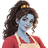
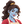
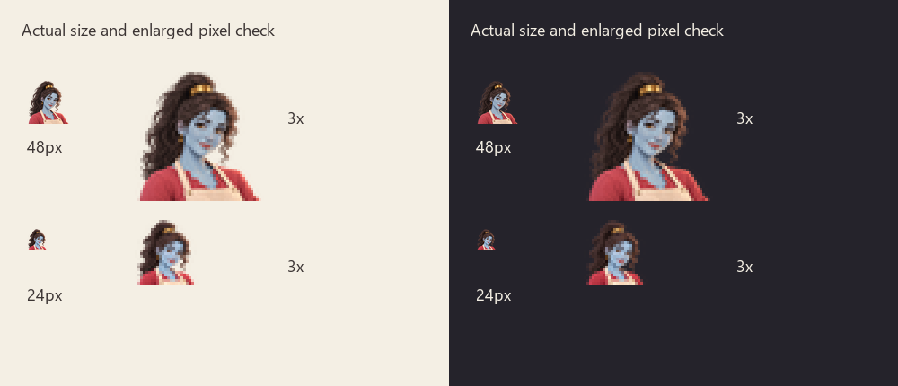

WhiskedAway / Gemma
Direction C, ready to model
Nicole's chosen stylised 3D Gemma. Same identity, clothes and proportions as the approved v2 references, with soft blue cheeks and no rosy blush.
Approved identity references
Stage 2 artwork
Avatars at actual display size
48px avatar, then the separately simplified 24px avatar, on light and dark backgrounds.



The turnaround is a modelling image reference. Approved room and cohost images remain the identity masters. The notes describe rig controls, steam attachment and prop contacts.